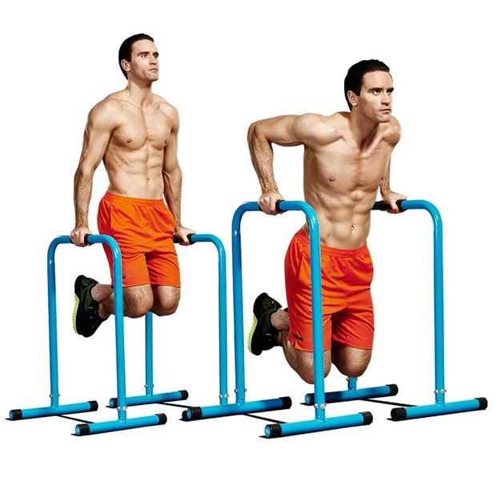
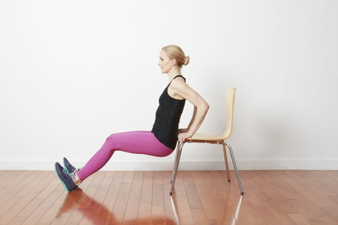

Lengan

Triceps Dips
Latihan ini membantu membakar penumpukan lemak pada otot triceps atau lengan bagian belakang

Chair Triceps Dips
Sama seperti triceps dips, latihan ini bisa memberikan hasil berupa lengan atas yang kencang dengan melatih otot triceps
Lateral Blank Walk
Latihan ini melibatkan otot besar pada lengan atas, mulai dari otot biceps, otot triceps, dan otot bahu.